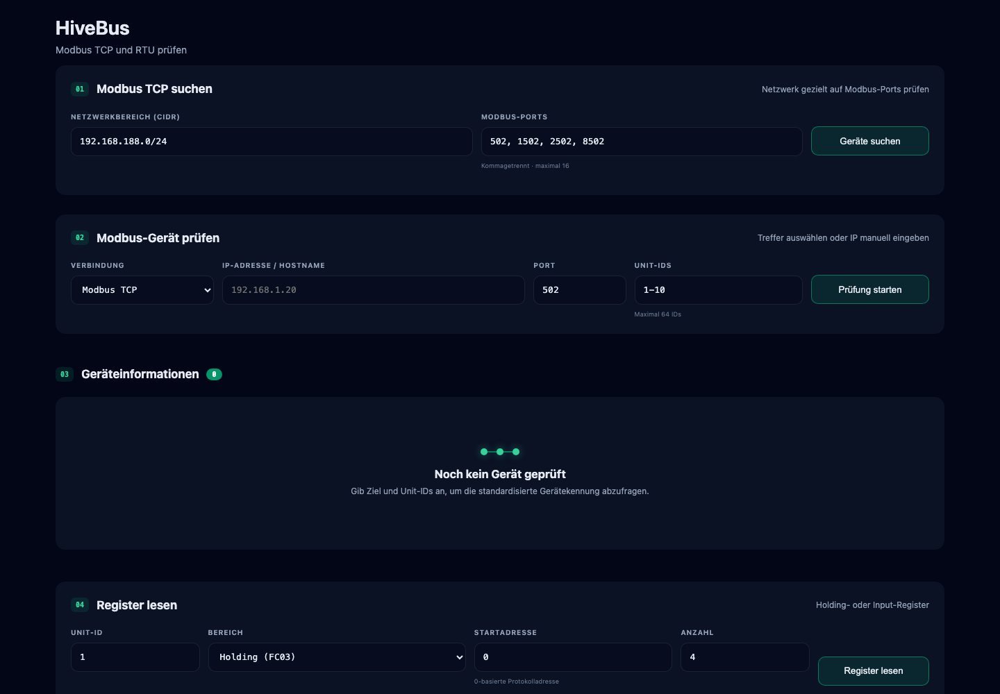

Vom Netzwerk bis zum Register
HiveBus kann private IPv4-Netze auf ausgewählten Modbus-Ports durchsuchen. Ein Treffer lässt sich anschließend auf erreichbare Unit-IDs und standardisierte Geräteinformationen prüfen. Holding- und Input-Register werden als Rohwert sowie in 16- und 32-Bit-Darstellungen angezeigt.
TCP und RS485 bewusst trennen
Neben Modbus TCP unterstützt HiveBus Modbus RTU am eHive-RS485-Port. Baudrate, Parität, Stopbits und Unit-ID müssen zur Anlage passen. Auf einem RS485-Bus darf nur ein Modbus-Master aktiv sein; HiveBus beendet andere Dienste deshalb nicht automatisch.
Schreiben bleibt eine kontrollierte Fachfunktion
Schreibzugriffe über FC06 oder FC16 erfordern das Bestätigungswort SCHREIBEN und eine zusätzliche Browserbestätigung. Das ersetzt keine Registertabelle des Herstellers. Falsche Adresse, Funktion oder Werte können den Anlagenbetrieb unmittelbar verändern.
Hinweis: Registerzugriffe nur mit passender Herstellerdokumentation und an einer dafür freigegebenen Anlage ausführen.